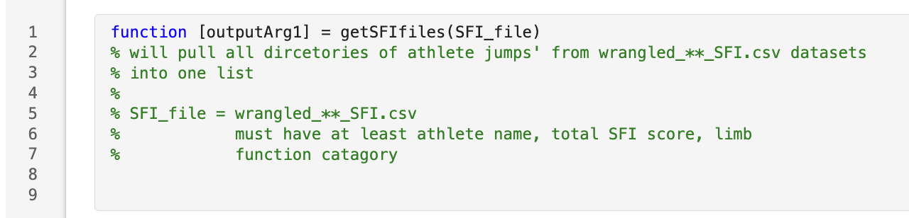

Honors Project
The aims of my honors project were to:
- To evaluate differences in mechanical characteristics during single leg vertical countermovement jump testing,
between anterior cruciate ligament (ACL) injured limbs and controls during eccentric deceleration and concentric jump phases.
- To use statistical curve analysis for a between-limb analysis of ACL injured athletes and uninjured athletes catagorized into good, fair and poor perception of limb function groups.
- To further compare the ACL injured and uninjured limbs to the good perception of limb function group.
Data Analysis
Across the duration of this project, I integrated the use of Matlab to automate data processing and statistical analysis, and R for data management and visualization.
R in RStudio
I dynamically learned to use R to identify if statistically significant differences existed between limbs in ACL injured athletes, and between ACL injured athletes and sex-, age-, sport-matched controls for aim 1 of this project
Matlab
Building off our pre-existing process-jumps group script, I wrote additional function to list the file paths for each jump file in my dataset, based on a csv file exported from R output that
summarized included participants.

The second function processed force-time data, ran spm analysis and created figures.

Results
The results of this project will be posted when publication is complete, please reach out via LinkedIn or email (shadan.alsaket@ucalgary.ca) if you have any questions or curiosities about this project.
Conferences and Awards
- McCaig Undergraduate Research Symposium | Calgary, Canada | August 14, 2024
- Poster presentation
- Title: A Retrospective Analysis of Force-Time Curve Variations in Single Leg Vertical Countermovement Jumping After Anterior Cruciate Ligament Reconstruction
- Annual Alberta Biomedical Engineering Conference | Banff, Canada | October 25-27, 2024
- Poster presentation
- Title: Single Leg Jump Force-Time Waveform Asymmetry is Increased After ACL Injury and With Low Percieved Limb Function
- University of Calgary Student Union Undergraduate Research Symposium | Calgary, Canada | November 19-21, 2024
- Poster presentation
- Title: Single Leg Jump Force-Time Waveform Asymmetry is Increased After ACL Injury and with Low Perceived Limb Function
- Awards: Faculty of Kinesiology Research Award